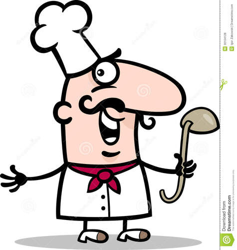
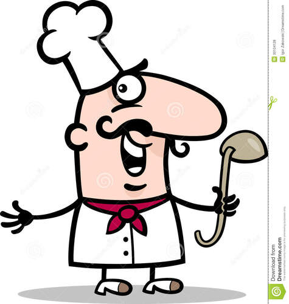

Lesley Ha
My name is Lesley, I’m 18 years old. I live with my family, which consists of, my mom, my 2 older brothers, my older sister, and my baby brother who is 5 years younger than me. I have brown hair and brown eyes. My constitution is below average and I am done growing. I’m quite likable externally, but not as ‘pretty’ as I would like to be, unfortunately. I respect myself, although I do not try to make myself a leader or head of the public. At the same time, I will not let myself be offended and try to make sure that my opinion is respected by both relatives and friends. I often stand in my opinion. It’s not so easy for me to change it even under the weight of some respectable arguments. Someone can consider that it is wrong, but I like to be independent in everything I am doing. My close people and friends know this feature in me and consider it to avoid unnecessary arguments or conversations. I studied at school on the average level not being a perfect pupil though trying not to be the last as well. Of all of the subjects most of all I liked mathematics, biology, and chemistry. I like mathematics because it is connected with logic to me. I enjoy logical games and everything connected to that. I like biology because it gives us insight into the world of creation of everything living on the Earth. It seems amazing and unknown, thus worth to be discovered. I like chemistry simply because I like to discover different formulas and it connects with math. I would not say that I am a devoted traveler as I mainly enjoy sitting in the comfort of my home. Though, I like to discover something new. Hopefully, nowadays we can travel virtually taking amazing 360-degree tours using smartphones or computers and thus “traveling” everywhere we want from the comfort of the sofa.I have a hobby. I adore table games of different kinds: with figures, chips, cards, and everything else. I can play classical chess for many hours. This hobby we share with my mother who makes the company for me. Also, I enjoy playing computer games but I don’t spend all my free time on them like many others. I also spend some time in our garage repairing or constructing something. I also have quite an unusual hobby. I like to make objects from the nails. Sometimes I can make rather big objects They are mainly imaginary figures or heroes of fantasy films. I am a sociable person. I like to get acquainted with new people, communicate in a big company, and participate in disputes. Among my friends, there are boys and girls. I would call myself a benevolent person, often I help my friends. If I can say that I have learned purposefulness from my father, the same I can admit that my mother learnt me to be helpful to people no matter of sex or race.
I was brought up in a multi-cultured community and I consider the people of all nations to be equal. I have learned to accept the right both of men and women for independence and self-realization. I think that such understanding together with a willingness to help all the people in need make a socially responsible individual me.In spite of that I try to be social sometimes, by my inner nature I am outwardly calm. I like to think and mark. But this does not mean that I can’t really worry. I just noticed that if I am internally excited, it’s not visible in my behavior. I would like to change this character trait a little. After all, often my friends and comrades just do not notice that I have some troubles, and thus do not offer help when I really need it. It’s so important to have someone to lean on sometimes. I try to be the one for my close friend and admire the same attitude in return. Occasionally I am short-tempered if I am very irritated. Then I can pour out all my anger on the offender so that he does not seem a little. But then I’m able to make up because I’m not vindictive.And yet I try to be a reliable person, real support for friends and family. I always try to help solve any problem, except contrived ones. Friends say that I am capable of leading when I need, to give a hand when someone is not capable to manage something.I believe that my friends respect me. Although I’m not the center of our company, friends like to come and usually get together at my house. I often help my friends: in studying something, at work, when someone needs to find a part-time job, etc. I always keep my hand on the pulse of events in our city. In this way, I can always propose to my friends to go to one or another interesting event, concert, etc.
I do not set myself the goal of becoming a leader as many others do, but I know that I can make the right decision when necessary. I repeatedly took responsibility in difficult situations, when all the others were lost. For this I respect myself. For this, I am respected by other people. I’m not one of those who suppress themselves or go beyond everywhere and every time. I usually say a little, but all my words are weighed. I prefer to act only when the situation requires it or circumstances force it. And it works! As at other times I can do my own affairs or just contemplate the world as it really is, revealing its real colors.I try to weigh everything rationally, but I often notice that I am giving in to emotions. Probably, a person’s behavior depends more on feelings than on his reasonable considerations. No wonder so often we are advised not to succumb to our feelings and emotions. So am I, I try to suppress emotions if they are negative, but they still break through into the light. It happens in many ways: they control me, I control them, changing anger into repentance, hatred into love, and envy into admiration. I do not know if it’s good or bad, but at least I’m working on myself in this direction.
You can even say that my goal in life is to become a successful person while preserving myself, my own habits and attachments. Although I understand that success is a rather subjective concept. Everyone understands it in his own way. For someone, success is a good career, promotion at work. For the others, it lies in the happiness of the family and the health of beloved ones. I used to think that success is something fleeting, today it exists, but tomorrow there is not. A well-done job is a success. Winning in lotto is a success. As they say, “came at the right time to the right place.”For me, success is akin to good luck. I believe in luck, even if it is short-lived, comes, in my experience, only in those moments when you do not expect it at all. Well, or in critical situations. You are in a state of hysteria, nothing will help, you can’t get out of the situation. Suddenly something happens and everything is resolved well (even very well). Something similar happened to me, and it was definitely luck. Many people think that luck is a gift of fate. It literally falls on you, it does not foresee. There are also those who believe in some magical essence of this concept – as through certain actions or spells, it can be called. Another opinion on this matter is the divine origin of luck (it is sent to people for good and righteous deeds). How many people, so many opinions. But what is a success for me then? It definitely has something in common with luck. It is necessary to strive for it for a long time, work hard, and set tasks. Luck can be in the form of an unexpected inheritance – distant relatives left you millions. This is luck. You have worked long hours, have not slept, been exhausted, and earned millions. This is a success. You can even say that my goal in life is to become a successful person while preserving myself, my own habits, and my attachments. Although I understand that success is a rather subjective concept. Everyone understands it in his own way. For someone, success is a good career and promotion at work. For the others, it lies in the happiness of the family and the health of beloved ones. I used to think that success is something fleeting, today it exists, but tomorrow there is not. A well-done job is a success. Winning the lotto is a success. As they say, “came at the right time to the right place.” Maybe I am a philosopher inside of me. I often think about those concepts of luck and success. It is difficult to determine the limits of success. A man worked all his life in a small company and became its director: with an average income, a standard apartment, small family. In his understanding, he is successful – he has enough for everything, and he feels comfortable. Another person earns millions but wants billions, but it does not work. He thinks he is not successful. I hope that I will soon determine for myself – what to consider a success. Life will show if I am right or wrong.
Experience
Food Service Worker
• Clean dishes,wipe tables, clean floors,clean bathrooms
• Serve customers
• Talk to customers
• serve food
Food service Worker
• Responsible for serving customers
• serving out food, packaging food, making drinks
• taking orders
• operating the cashier
• cleaning bathroom, sweeping floors, moping, wiping down tables and lobby
Barista
• Responsible for serving customers
• serving out food, packaging food, making drinks
• taking orders
• operating the cashier
• cleaning bathroom, sweeping floors, moping, wiping down tables and lobby
Education
UC Riverside
Portfolio


